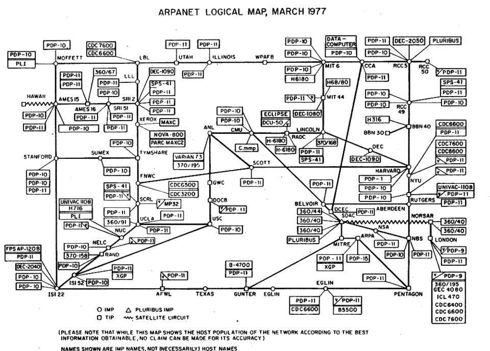
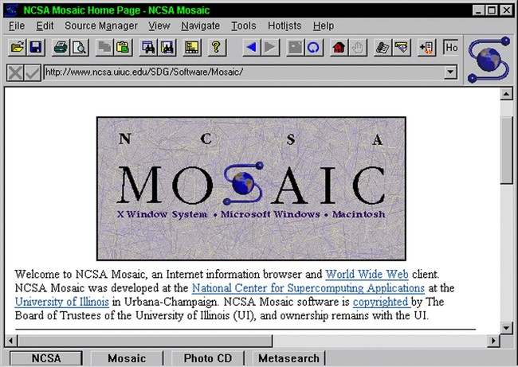
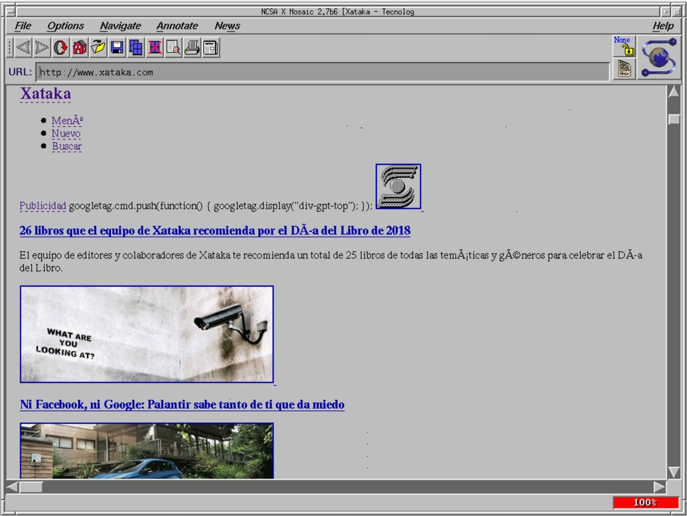
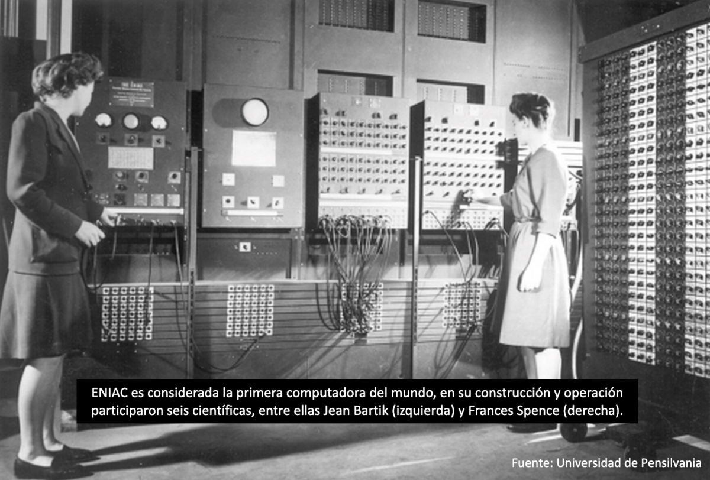
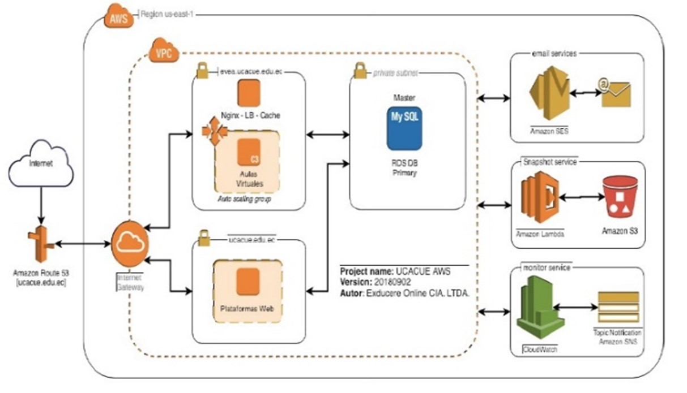

1990: Contexto Internacional y Nacional
La World Wide Web: Propuesta Original de Tim Berners-Lee
Momento histórico internacional: En marzo de 1990, Tim Berners-Lee, investigador del CERN en Suiza, presentó formalmente su propuesta para un sistema de gestión de información que denominaría "World Wide Web". Este documento, titulado "Information Management: A Proposal", describía un sistema basado en hipertexto para facilitar el intercambio de información entre investigadores. Aunque inicialmente concebido para necesidades específicas del CERN, este proyecto contenía las bases conceptuales de lo que eventualmente se convertiría en la web global que conocemos hoy.
La propuesta de Berners-Lee describía tres tecnologías fundamentales que permitirían la web: HTML (HyperText Markup Language) para crear documentos web, URI (Uniform Resource Identifier) para identificar recursos en la web, y HTTP (Hypertext Transfer Protocol) para transferir estos recursos. Estas especificaciones técnicas, aunque rudimentarias en su primera versión, establecieron principios de diseño que garantizarían la escalabilidad y descentralización del sistema.
Elementos clave de la propuesta original (1990):
- Arquitectura cliente-servidor: Propuesta clara de separación entre navegadores (clientes) y servidores web
- Sistema de hipertexto: Enlaces entre documentos como mecanismo fundamental de navegación
- Acceso universal: Visión de un sistema accesible desde cualquier plataforma computacional
- Gestión descentralizada: Diseño que no requería control centralizado de contenidos
- Interoperabilidad: Énfasis en estándares abiertos para garantizar compatibilidad
Documento fundacional que describe la visión y arquitectura técnica inicial de lo que se convertiría en la web.
Infraestructura de Telecomunicaciones en Ecuador a Inicios de los 90s
A principios de la década de 1990, Ecuador contaba con una infraestructura de telecomunicaciones en proceso de modernización pero aún predominantemente analógica. El servicio telefónico, operado por la estatal IETEL (Instituto Ecuatoriano de Telecomunicaciones), presentaba limitaciones significativas en capacidad y cobertura. La densidad telefónica era baja en comparación con estándares internacionales, y el acceso a servicios de datos era extremadamente limitado y costoso.
Para las instituciones de educación superior, estas limitaciones de infraestructura representaban barreras significativas para la adopción de tecnologías de red avanzadas. Las conexiones entre ciudades requerían generalmente el uso de líneas dedicadas analógicas con capacidades limitadas (generalmente 9.6 Kbps a 64 Kbps) y costos prohibitivos para aplicaciones académicas. La falta de competencia en el sector de telecomunicaciones y las restricciones regulatorias adicionales complicaban aún más el panorama para instituciones que buscaban mejorar su conectividad.
La UCE ante el cuello de botella de IETEL (1990):
Para la Universidad Central del Ecuador, la situación de las telecomunicaciones era particularmente crítica. Su enorme campus (La Ciudadela Universitaria) y la dispersión de sus facultades hacían que la dependencia de la saturada red de cobre de IETEL fuera un obstáculo mayúsculo. La comunicación de datos entre edificios era prácticamente inexistente; los centros de cómputo operaban como "islas" aisladas y la administración central dependía de procesos manuales o sistemas cerrados sin interconexión externa.
Contexto regulatorio:
El sector de telecomunicaciones en Ecuador operaba bajo un modelo estatal monopólico que comenzaría a transformarse gradualmente durante la década de 1990. Este contexto regulatorio afectaba directamente la disponibilidad, calidad y costo de los servicios de comunicación de datos necesarios para el desarrollo de redes académicas y el eventual acceso a Internet.
Fuente de apoyo: Análisis del sector de las telecomunicaciones en el Ecuador (Tesis EPN). Documento que describe el estado de la red pública de telefonía y datos en la época.
1991: Nacimiento de Internet en Ecuador
Creación de ECUANEX: Primer Proveedor de Internet en Ecuador
Hito histórico documentado: En diciembre de 1991 se estableció formalmente ECUANEX (Ecuadorian Network for Exchange), reconociéndose históricamente como el primer proveedor de servicios de Internet en Ecuador. Esta iniciativa pionera surgió de la colaboración entre varias instituciones académicas y de investigación, respondiendo a la creciente necesidad de conectividad internacional para proyectos científicos y de cooperación académica.
ECUANEX inició operaciones utilizando tecnología UUCP (Unix-to-Unix Copy Protocol) sobre conexiones telefónicas internacionales, implementando un modelo de store-and-forward para servicios de correo electrónico y transferencia de archivos. La conectividad internacional inicial se estableció a través de enlaces satelitales hacia Estados Unidos, con velocidades iniciales extremadamente limitadas (generalmente 9.6 Kbps) que reflejaban tanto las restricciones tecnológicas de la época como las limitaciones presupuestarias de las instituciones participantes.
El rol inicial de la UCE:
Durante la formación de iniciativas pioneras como ECUANEX, académicos e investigadores de la Facultad de Ingeniería, Ciencias Físicas y Matemática (FICA) de la UCE fueron de los primeros dentro de la institución en vislumbrar el potencial de estos nodos. Aunque la infraestructura masiva del campus aún no permitía red para estudiantes, profesores pioneros comenzaron a utilizar conexiones telefónicas conmutadas desde laboratorios cerrados para acceder a redes de investigación internacional y usar el correo electrónico en sistemas Unix.
Características técnicas iniciales de ECUANEX:
- Protocolo principal: UUCP (Unix-to-Unix Copy) para transferencia asíncrona de datos
- Servicios ofrecidos: Correo electrónico, transferencia de archivos, acceso a grupos de noticias seleccionados
- Conectividad internacional: Enlace satelital hacia nodos en Estados Unidos, generalmente en Florida o Texas
- Modelo de operación: Store-and-forward con actualizaciones periódicas en lugar de conexión permanente
- Instituciones fundadoras: Colaboración entre ESPOL, algunas universidades de Quito, y organismos de investigación

Registro histórico sobre el nacimiento de ECUANEX y la llegada de la red al país.
Primeras Conexiones Académicas Internacionales desde Ecuador
Las primeras conexiones de Internet desde Ecuador establecidas en 1991 representaron un logro tecnológico significativo en el contexto nacional. Estas conexiones generalmente utilizaban tecnología satelital (VSAT) o líneas dedicadas internacionales para establecer enlaces con proveedores de backbone en Estados Unidos. El proceso de establecimiento de estas conexiones involucró complejas negociaciones con operadores internacionales, trámites regulatorios con autoridades de telecomunicaciones ecuatorianas, y significativas inversiones en equipamiento especializado.
Para las instituciones académicas que participaron en estas primeras conexiones, el acceso a Internet abrió posibilidades radicalmente nuevas para la colaboración internacional, el acceso a recursos de información global, y la participación en comunidades académicas virtuales. Sin embargo, estos beneficios iniciales estuvieron limitados a pequeños grupos de investigadores y administradores, dada la capacidad extremadamente limitada de las conexiones y los altos costos involucrados.
Impacto académico inicial:
Aunque limitado en alcance, el acceso a Internet comenzó a transformar gradualmente prácticas de investigación en instituciones ecuatorianas. Investigadores pudieron acceder a bases de datos académicas internacionales, participar en listas de discusión especializadas, y establecer colaboraciones directas con colegas en otras partes del mundo sin la necesidad de costosos viajes o correspondencia postal lenta.
El Beneficio de las Redes Académicas en el Desarrollo de la Excelencia en la Educación Superior del Ecuador (Dialnet).
Contexto Global de Internet en 1991
Hosts globales
(RFC 1296, ene 1992)
Usuarios globales
(Estimación ISOC)
Países LATAM con red
(Ecuador entre pioneros)
Kbps velocidad
(Conexión típica Ecuador)
Perspectiva histórica: Cuando Ecuador se conectó a Internet en 1991, la red global tenía aproximadamente 600,000 hosts y servía a unos 4.5 millones de usuarios principalmente en países desarrollados. Ecuador se encontraba entre los primeros 10 países de América Latina en establecer conectividad, aunque con capacidades extremadamente limitadas comparadas con países pioneros como Brasil o Chile.
1992-1993: Expansión y Adopción Académica
Expansión de Servicios Internet en Universidades Ecuatorianas
Adopción gradual en educación superior: Durante 1992 y 1993, un número creciente de universidades ecuatorianas comenzó a establecer conexiones a Internet, generalmente a través de ECUANEX o mediante acuerdos directos con proveedores internacionales. Este proceso de adopción fue gradual y desigual, con instituciones más grandes y con mayores recursos técnicos liderando el camino, mientras que universidades más pequeñas o con menos recursos enfrentaban mayores desafíos para establecer y mantener conectividad.
La expansión de servicios Internet en este período coincidió con desarrollos tecnológicos internacionales significativos. En particular, el lanzamiento del navegador web NCSA Mosaic en 1993 representó un punto de inflexión en la usabilidad de Internet, transformándola de una herramienta principalmente basada en texto a un medio visual más accesible. Aunque la adopción de Mosaic en Ecuador fue lenta debido a limitaciones de ancho de banda y capacidad de hardware, su existencia comenzó a cambiar expectativas sobre lo que era posible con acceso a Internet.
Servicios Internet disponibles 1992-1993:
- Correo electrónico: Servicio más utilizado, generalmente a través de clientes como Pine o Elm en sistemas Unix
- FTP (File Transfer Protocol): Para transferencia de archivos, incluyendo software y documentos académicos
- Telnet: Acceso remoto a sistemas académicos y catálogos bibliotecarios internacionales
- Gopher: Sistema de menús jerárquicos para navegación de información (predecesor de la web)
- USENET/Newsgroups: Grupos de discusión temáticos, aunque con acceso limitado por restricciones de ancho de banda
- WAIS (Wide Area Information Servers): Sistema de búsqueda de información distribuida

Documentación histórica sobre el desarrollo e impacto del primer navegador web gráfico popular.
Primeros Sitios Web en Dominio .ec y Desarrollo de Contenido Local
Aproximadamente en 1993 comenzaron a aparecer los primeros sitios web alojados en el dominio de código de país .ec para Ecuador. Estos sitios pioneros eran generalmente extremadamente básicos en términos de diseño y funcionalidad, creados utilizando HTML 1.0 o 2.0 con estructuras simples de texto y enlaces. La mayoría carecía de imágenes debido a limitaciones de ancho de banda y preocupaciones sobre tiempos de carga, y su contenido tendía a ser institucional básico más que aplicaciones interactivas complejas.
El desarrollo de estos primeros sitios web representó un proceso de aprendizaje significativo para las instituciones involucradas. Equipos técnicos tuvieron que adquirir conocimientos sobre protocolos web, configuración de servidores HTTP, y principios básicos de diseño de información para la web. Este proceso de aprendizaje incluyó experimentación con diferentes tecnologías, adaptación de herramientas desarrolladas internacionalmente a necesidades locales, y desarrollo de prácticas institucionales para la gestión de contenido web.
La UCE frente al desafío digital (1993):
A diferencia de instituciones más ágiles, la UCE enfrentaba una inercia burocrática significativa debido a su tamaño. La adopción de estas nuevas tecnologías requería aprobaciones complejas de múltiples consejos universitarios. Mientras los ingenieros de la FICA experimentaban con los primeros servidores web internos en estaciones Unix, la estructura administrativa central aún luchaba por entender la necesidad estratégica de invertir presupuestos limitados en "conectividad internacional".
Dato Curioso
Aunque el código de país .ec fue delegado oficialmente por la IANA (Internet Assigned Numbers Authority) el 2 de diciembre de 1991 a nombre de administradores locales, la verdadera acción de registro institucional y administración de sitios web despegó de forma más visible hacia finales de 1993.

Fuente de apoyo: Historia de NIC.ec (Entidad administradora del dominio .ec).
1994: Consolidación y Crecimiento Acelerado
Explosión Global de la World Wide Web y su Impacto en Ecuador
El "año de la web": 1994 es frecuentemente identificado como el año en que la World Wide Web alcanzó masa crítica a nivel global. Varios desarrollos clave convergieron para acelerar dramáticamente la adopción de la web: la fundación del World Wide Web Consortium (W3C) en octubre para estandarizar tecnologías web, el lanzamiento de Netscape Navigator que popularizó la navegación web gráfica, y la creciente cobertura mediática que llevó el concepto de "web" al conocimiento público general.
En Ecuador, este contexto global de aceleración web tuvo varios efectos significativos. Primero, aumentó la presión sobre instituciones para desarrollar presencia web y capacidades relacionadas. Segundo, expandió la conciencia sobre el potencial de Internet más allá de círculos técnicos especializados. Tercero, estimuló la demanda de capacitación en tecnologías web y desarrollo de contenido digital. Sin embargo, estas tendencias globales chocaron con las realidades locales de limitada infraestructura, altos costos de conectividad, y escasez de personal capacitado.
Estadísticas globales de crecimiento web (1994):
- Sitios web globales: Aproximadamente 10,000 a finales de 1994 (crecimiento exponencial desde ~130 en 1993)
- Tráfico web: Comenzó a superar otros protocolos Internet como FTP y Gopher
- Navegadores: Netscape Navigator capturó rápidamente 75% del mercado tras su lanzamiento en diciembre
- Contenido: Transición de sitios predominantemente académicos/gubernamentales a incluir contenido comercial y personal
- Tecnologías: Introducción de características como formularios web, tablas HTML, y soporte inicial para imágenes mejor integradas

Datos históricos sobre el crecimiento exponencial del número de sitios web durante los primeros años de la web.
Desarrollo de Infraestructura y Políticas Institucionales para Internet
A medida que el uso de Internet crecía en instituciones de educación superior ecuatorianas durante 1994, surgió la necesidad de desarrollar infraestructura más robusta y políticas institucionales más formales para su gestión. Este proceso incluyó varios componentes interrelacionados: expansión de capacidad de red interna para soportar mayor tráfico Internet, adquisición de equipamiento especializado como routers y firewalls, desarrollo de políticas de uso aceptable, establecimiento de estructuras organizacionales para gestión de tecnología, y creación de programas de capacitación para usuarios.
Las decisiones sobre inversión en infraestructura Internet durante este período involucraron complejos análisis costo-beneficio, dado el alto costo relativo de equipamiento y conectividad en el contexto ecuatoriano. Instituciones tuvieron que balancear la necesidad de capacidades técnicas avanzadas con restricciones presupuestarias reales, priorizando generalmente conectividad básica y servicios esenciales sobre capacidades avanzadas o redundancia extensiva. Este proceso de toma de decisiones sentó precedentes importantes para la evolución posterior de infraestructura tecnológica institucional.
El reto masivo de la UCE:
Para la Universidad Central del Ecuador, dar el salto hacia una infraestructura integral representó un desafío logístico colosal. A diferencia de instituciones privadas o politécnicas con menos alumnado, la UCE (que mantenía políticas de ingreso masivo) debía planificar una red que en el futuro soportaría a decenas de miles de estudiantes y una vasta extensión de campus (La Ciudadela Universitaria). Esto obligó a las autoridades a iniciar estudios tempranos para la instalación de cableado troncal de fibra óptica que interconectara sus dispersas facultades, un proyecto que cristalizaría con fuerza en la segunda mitad de la década.
Contexto económico nacional:
El año 1994 en Ecuador estuvo marcado por procesos de liberalización económica y reformas estructurales que afectaron indirectamente el desarrollo tecnológico. Políticas de apertura comercial facilitaron la importación de equipamiento tecnológico, mientras que reformas en telecomunicaciones comenzaron a crear condiciones para mayor competencia en servicios de conectividad. Estos factores crearon un entorno más favorable para la expansión de infraestructura.

Gobernanza de Internet en Ecuador.
Balance Histórico y Metodología: 1990-1994
Logros y Avances Documentables del Período
El período 1990-1994 representó una fase fundacional crítica para el desarrollo de Internet en la educación superior ecuatoriana. Entre los logros históricamente significativos de este período se pueden identificar:
- Establecimiento de conectividad inicial: Conexión de Ecuador a Internet global a través de iniciativas pioneras como ECUANEX
- Creación de capacidades técnicas básicas: Desarrollo del primer grupo significativo de profesionales ecuatorianos con experiencia práctica en tecnologías de red Internet
- Inicio de presencia digital institucional: Creación de los primeros sitios web y servicios en línea de instituciones académicas ecuatorianas
- Integración en redes académicas globales: Participación inicial en comunidades y recursos académicos internacionales accesibles a través de Internet
- Establecimiento de precedentes institucionales: Desarrollo de modelos organizacionales y políticas iniciales para la gestión de tecnologías Internet en contextos académicos
- Democratización incipiente del acceso: Primeros pasos hacia el acceso más amplio a recursos de información global, aunque limitado a círculos académicos y técnicos

Referencia de apoyo: Tecnologías de la información y la comunicación en la educación superior ecuatoriana (Redalyc).
Limitaciones y Desafíos Persistentes Identificados
Junto con los avances significativos, el período 1990-1994 también reveló limitaciones estructurales y desafíos persistentes que afectarían el desarrollo tecnológico posterior:
- Infraestructura insuficiente: Limitaciones crónicas en capacidad de red, confiabilidad de conexiones, y acceso eléctrico estable afectaron la experiencia de usuario y aplicaciones posibles
- Asimetría de acceso: Grandes desigualdades en calidad y disponibilidad de conectividad entre instituciones, regiones, y grupos socioeconómicos
- Dependencia tecnológica externa: Alta dependencia de equipamiento importado, estándares internacionales, y expertise externo para implementación y mantenimiento
- Falta de políticas nacionales integradas: Ausencia de estrategias nacionales coherentes para el desarrollo de Internet en educación, investigación e innovación
- Barreras económicas: Altos costos relativos de equipamiento, conectividad, y capacitación en el contexto de restricciones presupuestarias institucionales
- Brecha digital emergente: Creciente distancia entre instituciones con acceso robusto a Internet y aquellas con acceso limitado o nulo
- Desafíos de sostenibilidad: Dificultades para mantener y actualizar infraestructura y capacidades en contextos de incertidumbre presupuestaria
Repositorios Documentales y Preservación Histórica
La investigación histórica sobre el período fundacional de Internet en Ecuador (1990-1994) se basa en varios tipos de fuentes documentales, enfrentando retos enormes por la fragilidad digital de los primeros años.
Tipos de fuentes utilizadas y consideraciones:
- Documentos técnicos e institucionales: RFCs, archivos de IETEL/EMETEL, planes estratégicos universitarios (ESPOL, UCE).
- Archivos web históricos: Capturas del Internet Archive (Wayback Machine) de sitios pioneros.
- Testimonios y publicaciones: Entrevistas a los pioneros de ECUANEX y artículos periodísticos de la época.
- Fragilidad y Obsolescencia: Gran parte de la historia oral no está capturada, y los soportes de almacenamiento (disquetes, cintas) son hoy inaccesibles sin emulación.
Próxima Fase: 1995-1999 - Expansión y Crisis
El período 1995-1999 representaría tanto la expansión acelerada de Internet en Ecuador como su prueba más severa durante la crisis económica de 1999. La siguiente fase de esta investigación histórica documentará esta dualidad: crecimiento tecnológico exponencial seguido por contracción dramática, y las lecciones institucionales resultantes.
Temas clave del próximo período: Internet comercial en Ecuador, proyectos de cooperación internacional para infraestructura educativa, desarrollo de portales web institucionales (como el nacimiento oficial de la red UCE), impacto de la crisis bancaria en infraestructura, y estrategias de resiliencia tecnológica.